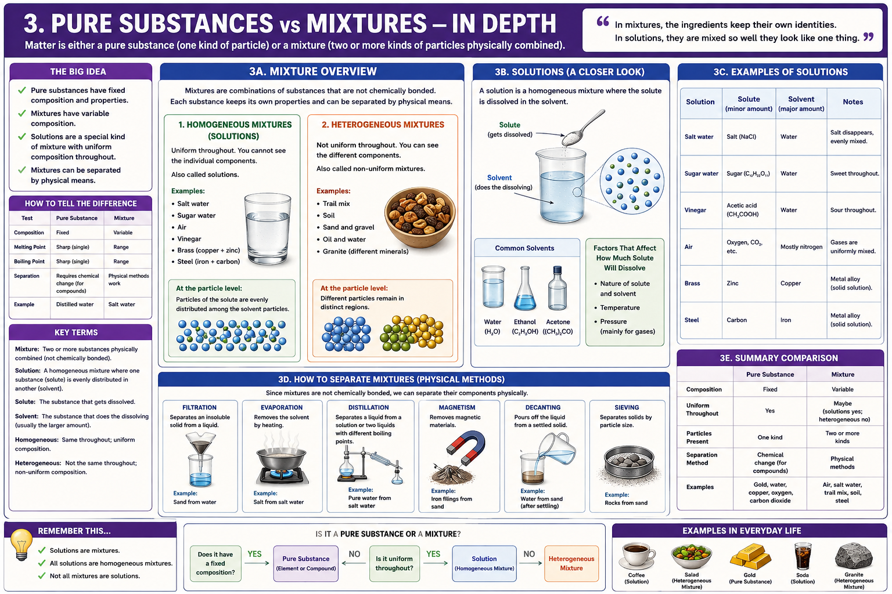

Fixed composition
A pure substance always has the same chemical makeup and characteristic properties. It may be an element or a compound.
- Gold
- Oxygen
- Distilled water
- Carbon dioxide
Chemistry · Composition · Separation
A lesson for Klins on how chemists distinguish fixed composition from variable composition, how solutions work, and why mixtures can be separated without changing chemical identity.

This question separates pure substances from mixtures.
A pure substance always has the same chemical makeup and characteristic properties. It may be an element or a compound.
A mixture may contain different proportions of its components. Those components are not chemically bonded to one another.
| Feature | Pure substance | Mixture |
|---|---|---|
| Composition | Fixed | Variable |
| Particles present | One chemically defined kind | Two or more kinds |
| Separation | Chemical change may be required for compounds | Physical methods can be used |
A glass of salt water may look like one thing, but it is still a mixture. The salt has not become water, and the water has not become salt. The particles are distributed together while keeping their own chemical identities.
Mixtures differ in how evenly their components are distributed.
A homogeneous mixture has the same composition in every sampled region. Its individual components are not visibly distinct.
A heterogeneous mixture contains visibly or microscopically distinct regions with different compositions.
A solution is a homogeneous mixture formed when one substance dissolves in another.
The solute is usually the smaller component. In salt water, salt is the solute.
The solvent is usually the larger component. In salt water, water is the solvent.
Solute particles become evenly distributed among solvent particles at the molecular or ionic level.
Not every solute dissolves equally well in every solvent.
Polar substances tend to dissolve in polar solvents, while nonpolar substances tend to dissolve in nonpolar solvents.
Temperature can change solubility and dissolving rate. Many solids dissolve more readily in warmer liquids.
Pressure has its strongest effect on gases. Higher pressure can force more gas into solution.
Because mixture components are not chemically bonded, they can often be separated physically.
Separates an insoluble solid from a liquid by passing the mixture through a porous barrier.
Removes the solvent by turning it into vapor, leaving dissolved solids behind.
Separates liquids or recovers a solvent using differences in boiling point.
Removes magnetic materials such as iron from nonmagnetic materials.
Pours off a liquid after a solid settles or after two liquid layers separate.
Separates solids according to particle size.
Separation methods exploit differences in physical properties: particle size, boiling point, solubility, density, magnetic behavior, or phase. No new substance has to be created.
The distinction appears constantly outside the laboratory.
A solution containing dissolved flavor compounds, plus possible suspended particles depending on preparation.
A heterogeneous mixture whose components remain visibly separate.
A pure elemental substance when sufficiently refined.
A solution containing water, dissolved sugar or sweeteners, flavor compounds, and dissolved carbon dioxide.
A heterogeneous mixture of different minerals such as quartz, feldspar, and mica.
A homogeneous solid mixture, or alloy, mainly composed of copper and zinc.
Use these questions to classify a material.
If yes, it is a pure substance. If no, it is a mixture.
An element contains one kind of atom. A compound contains elements chemically bonded in a fixed ratio.
If yes, it is homogeneous. If no, it is heterogeneous.
If so, it is a solution with a solute and solvent.
Look for useful physical differences such as size, density, boiling point, solubility, or magnetism.
Composition is one of chemistry’s most important organizing ideas. A material may look uniform while still containing multiple substances, and a material may look complex while still being chemically pure. Classification depends on particles and composition, not appearance alone.